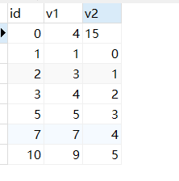
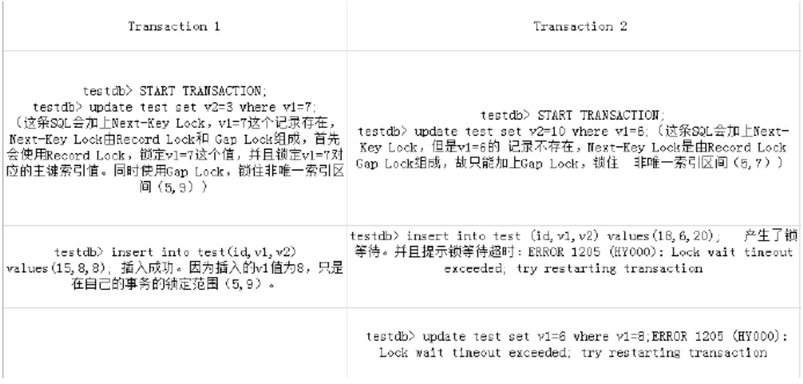
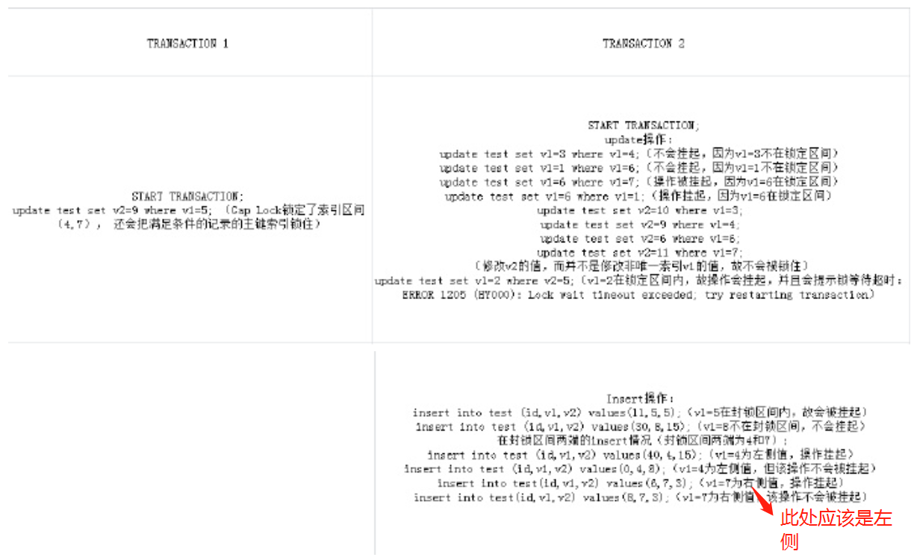

demo table
创建表
1 | create table test( |
该表的记录如下：

一、Gap Lock
间隙锁（Gap Lock）一般是针对非唯一索引而言的，test表中的v1（非唯一索引）字段值可以划分的区间为：
（-∞,1）
（1,3）
（3,4）
（4,5）
（5,7）
（7,9）
（9, +∞）
ps：注意，gap 锁只锁记录之间的范围，不对记录产生影响。
假如要更新v1=7的数据行，那么此时会在索引idx_v1对应的值，也就是v1的值上加间隙锁，锁定的区间是（5,7）和（7,9）。同时找到v1=7的数据行的主键索引和非唯一索引，对key加上锁。
二、Next-Key Lock
记录锁和间隙锁的结合，对于InnoDB中，更新非唯一索引对应的记录（在这里来说是更新v1字段的值），会加上Next-Key Lock。如果更新记录为空，就不能加记录锁，只能加间隙锁。
举个例子（事务隔离级别为MySQL默认的可重复读）

问题：
为什么TRANSACTION 2的insert操作会被阻塞，产生等待呢？
解释：
这是因为TRANSACTION 2插入的v1值为6在TRANSACTION 1的锁定区间（5,9）内。而TRANSACTION 1插入的v1值不在TRANSACTION 2的锁定区间（5,7）内，故可以成功插入。不仅仅insert操作， update操作也一样会被锁住，从而锁等待超时。
从T2的第一个update操作也可以看出，Gap Lock之间不是互斥的。
注意：
这里需要注意，自我尝试之后，发现图中可能有些问题。比如：在 T2 中最后的update 部分，实际上是可以成功的。如果 T2 在最后的 update 操作时，由于隔离级别是 RR，T2中是没有 v1=8的，所以并没有收到锁的影响。如果将 where v1=8换成 v1=1，则会等待锁，因为T2中存在v1=1的记录，等待锁是因为虽然v1=1没有锁，但是v1=6上有锁，所以要等待。
三、范围两端记录的锁的问题
加Next-key Lock的时候，并没有锁住间隙两端的记录（这里的两端分别是5,9和5,7），那么两端的记录是可以更新的，但是如果更新两端的记录会影响到间隙锁，那么操作会被挂起，等待间隙锁释放。
看以下演示：

事务2上半部分的update操作
证明：Gap Lock 锁定的区间，如果有update操作要更新索引的值，会被锁定。
事务2下半部分的insert操作
问题：
为什么在左侧值为4，右侧值为7的时候，有时候操作会被挂起，有时候操作不会挂起呢？
解释如下：
由于 v1 是非唯一索引，所以在 4,7 两个值的左右也有分别。它的左右是依赖于主键 id 的顺序来规定的。表中 v1 = 4的id为3，如果insert into test(id, v1,v2) values(0,4,3) 的记录，则为它的左侧； 如果insert into test(id, v1,v2) values(6,4,3) 的记录，则为右侧。v1 = 7的同理。
当插入左侧值的时候，即插入v1=4的时候，要求插入的id值小于id=3的范围。当v1=4的记录有多条的时候，插入的id值要小于其中的最大id值。则可以成功插入；
当插入右侧值的时候，即插入v1=7的时候，要求插入的id值要大于id=7的范围。当v1=7的记录有多条的时候，插入的id值要大于其中的最小id值。则可以成功插入。
四、结论
- Gap Lock 之间不是互斥的
- Gap Lock 不仅会影响 insert，也会影响 update。因为 update 的 set 操作也会收到锁的影响
- Gap Lock 边界值的左右侧，是先从二级索引中找到两个边界值，然后再用边界值去主键索引树按照主键顺序来界定边界值的左右侧部分
这部分是搬运之后，自己又尝试着跟了一边demo，对原有结论的一些猜想，如果有缺失或者不对的地方，请在下方留言，大家一起交流，一起学习，一起进步~